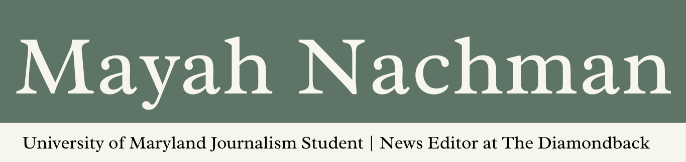

I'm a journalism and international relations student at the University of Maryland who is passionate about pursuing a career in journalism. Currently, I serve as a news editor at The Diamondback, my university's independent student newspaper. I have covered Maryland state politics for Maryland Matters, a nonprofit news outlet based in Annapolis, and Prince George's County for The Diamondback. My work has been picked up by publications like the Baltimore Sun, Bethesda Magazine and WTOP News.
Expected Graduation: May 2028
B.A. in Journalism — Philip Merrill College of Journalism
B.A. in International Relations — College of Behavioral and Social Sciences
Maryland Matters | August 10, 2026
Read articleMaryland Matters | June 18, 2026
Read articleThe Diamondback | February 20, 2026
Read article